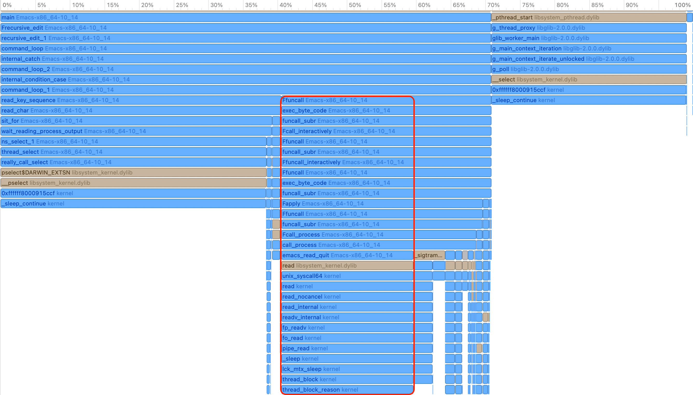
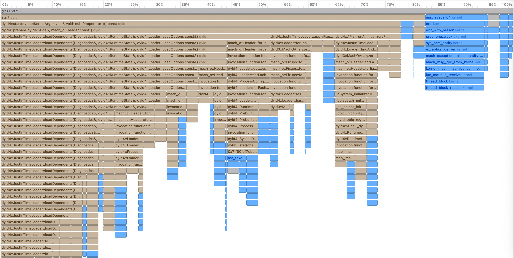

Why fork+exec Takes 100ms on My Mac: Debugging Slow Emacs with Instruments
Summary
Magit was taking 3 seconds on a small repo. The culprit: OCLP's system
library patches invalidate macOS dyld shared cache closures, causing
every fork+exec to fall back to JustInTimeLoader at ~100ms per
process launch. Magit spawns ~25 git processes per magit-status.
Introduction
I found my fresh Emacs install is slow on macOS 15, especially when
running Magit on a tiny git repo. For example, it takes 2~3 seconds to
run the magit-status command.
I tried several tweaks like DNS resolving and switching to a plain
Emacs config (emacs -Q), but none of them worked. I decided to do
further investigation by profiling.
First Profiling Tool: the Emacs Built-in Profiler
Emacs has a built-in profiler. It can be used as:
profiler-start ;; run profiler-report to get the result.
Here is the report when running magit-status on the small git repo:
95% - ... 95% - list 95% - cons 95% - cons 95% - cons 95% - cons 95% - cons 95% - cons 95% - cons 95% - eval-expression--debug 95% - debug 95% - recursive-edit 95% - command-execute 95% - call-interactively 78% - byte-code 78% - read-extended-command 78% - read-extended-command-1 78% - completing-read 78% - completing-read-default 78% - read-from-minibuffer 31% + redisplay_internal (C function) 15% + icomplete-post-command-hook 0% + command-execute 0% + timer-event-handler 0% + minibuffer-inactive-mode 16% + funcall-interactively 0% + redisplay_internal (C function) 4% Automatic GC
Nothing hot on the CPU is related to Magit. This makes sense — the CPU profiler only shows on-CPU time, but Magit's slowness may be in waiting for I/O (off-CPU). This is why off-CPU(Off-CPU profiling https://www.brendangregg.com/offcpuanalysis.html) profiling matters.
I turned to the ELP profiler, which is a tracing tool that helps identify I/O issues, such as when the code is scheduled out and not running on CPU. It simply records the timestamp when a function starts and when it ends, reporting the wall-clock time it takes.
The magit-toggle-profiling command can do the work. Run
magit-toggle-profiling, then run magit-status. After it finishes,
run magit-toggle-profiling again to show the following result:
;; time is in seconds. Function Name Call Count Elapsed Time Average Time magit-run-section-hook 2 4.043413 2.0217065 magit-process-git 25 3.587962 0.14351848 magit-process-file 25 3.587085 0.1434834 magit-status 1 3.373008 3.373008 ...
The above result is a little confusing if you are not familiar with
Magit's implementation. Each line is independent, and
magit-process-git actually calls magit-process-file internally,
so the "Elapsed Time" and "Call Count" are almost the same. At least
we know the slowness is caused by magit-process-file. It would be better
to use a real Off-CPU profiler to get the whole picture of what is going on.
Profiling with Instruments
The Instruments profiler included in Xcode can do Off-CPU profiling by using the "Time Profiler" with "Record Waiting Threads" enabled in the Time Profiler's config.

Figure 1: Emacs Profiling Flame Graph
The above flame graph was captured while the magit-status command
was running. There is a big portion of the graph related to the read
syscall, as highlighted. Other parts like pselect are
irrelevant to the slowness in Magit, because from the call stack we
can tell they come from the read_key_sequence function, which handles
user input.
Besides the "Time Profiler", Instruments can also record a
"System Call Trace". So if we click the read in the flame graph,
we can see the time spent in it and the read syscall's arguments,
as shown below. It is reading file descriptor 8, and it spends 250.4ms
waiting in the first call. The total time spent in the read syscall
is around 3 seconds and matches the time to run magit-status.
So the slow read syscall is causing the issue.
CPU Time=1.41 ms Wait Time=250.40 ms Emacs-x86_64-10_14 (33755) Main Thread 0x304972 read(fd:8, buf:0x7ff7bc6a4f40, len:16.00 KiB) = 16.00 KiB 0x8 0x7ff7bc6a4f40 0x4000 0x10 0x4000 0x0 n/a CPU Time=272.95 µs Wait Time=122.76 ms Emacs-x86_64-10_14 (33755) Main Thread 0x304972 read(fd:8, buf:0x7ff7bc6a4ee0, len:16.00 KiB) = 0 Bytes0x8 0x7ff7bc6a4ee0 0x4000 0x10 0x0 0x4 end-of-file was encountered CPU Time=343.33 µs Wait Time=120.95 ms Emacs-x86_64-10_14 (33755) Main Thread 0x304972 read(fd:8, buf:0x7ff7bc6a4f10, len:16.00 KiB) = 0 Bytes 0x8 0x7ff7bc6a4f10 0x4000 0x10 0x0 0x0 end-of-file was encountered . . . about 30 more similar read calls with the same fd:8
Connecting the Dots between ELP Magit Tracing and Instruments Tracing
Unfortunately, Instruments does not understand Elisp
interpreter frames and only shows C functions in the call
stack. So just from the call stack in the flame graph, we cannot tell which
Elisp function calls into the read syscall.
So let's check what fd:8 is in the above read syscall. Is it
a file in the git repo being read by magit-status that causes the
slowness?
Running the following command while magit-status runs shows that fd:8
is actually a PIPE:
# capture what is fd:8 while true; do lsof -p $(pgrep -f "emacs") | grep -E "8u"; sleep 0.1; done
This makes sense. From the flame graph's call stack of the
read syscall, it comes from Emacs's call_process function, and the
ELP results show that the slow function is magit-process-file, which
internally calls call_process. It turns out Magit uses fd:8,
a PIPE, to read the output of the git command. As shown by the
following log, if we capture magit-process-file's arguments by:
(defun my-magit-time-process-file (orig-fn program &rest args) (let ((start (current-time))) (prog1 (apply orig-fn program args) (let ((elapsed (float-time (time-subtract (current-time) start)))) (when (> elapsed 0.01) ;; Extract just the git arguments (skip nil and file handles) (let* ((git-args (seq-filter #'stringp (flatten-list args))) (cmd (string-join (cons program git-args) " "))) (message "\n[MAGIT] %.3fs:\n %s\n" elapsed cmd))))))) (advice-add 'magit-process-file :around #'my-magit-time-process-file)
We will see what magit-process-file is doing during magit-status:
[MAGIT] 0.104s:
/usr/local/bin/git --no-pager --literal-pathspecs -c core.preloadIndex=true -c log.showSignature=false -c color.ui=false -c color.diff=false -c diff.noPrefix=false config --list -z
[MAGIT] 0.097s:
/usr/local/bin/git --no-pager --literal-pathspecs -c core.preloadIndex=true -c log.showSignature=false -c color.ui=false -c color.diff=false -c diff.noPrefix=false log --no-walk --format=%h %s HEAD^{commit} --
[MAGIT] 0.092s:
/usr/local/bin/git --no-pager --literal-pathspecs -c core.preloadIndex=true -c log.showSignature=false -c color.ui=false -c color.diff=false -c diff.noPrefix=false symbolic-ref --short HEAD
Why Is the read Syscall Slow?
As we saw in the last section, the read syscall reads from a
PIPE to get git's output. So it is not the read syscall itself that
is slow; the slowness comes from the forked child process, and the parent
process just uses read to wait for the child process to produce output.
A test like below shows how slow creating a new process is when running an executable:
#include <stdio.h> #include <stdlib.h> #include <string.h> #include <unistd.h> #include <sys/time.h> #include <sys/wait.h> double get_time_ms(void) { struct timeval tv; gettimeofday(&tv, NULL); return tv.tv_sec * 1000.0 + tv.tv_usec / 1000.0; } int main(int argc, char *argv[]) { int iterations = 5; /* Test 1: fork + _exit (no exec) */ printf("=== Test 1: fork + _exit (no exec) ===\n"); for (int i = 0; i < iterations; i++) { double start = get_time_ms(); pid_t pid = fork(); if (pid == 0) { _exit(0); } int status; waitpid(pid, &status, 0); printf(" %d: %.3f ms\n", i + 1, get_time_ms() - start); } /* Test 2: fork + exec /usr/bin/true */ printf("\n=== Test 2: fork + exec /usr/bin/true ===\n"); for (int i = 0; i < iterations; i++) { double start = get_time_ms(); pid_t pid = fork(); if (pid == 0) { char *args[] = {"/usr/bin/true", NULL}; execv("/usr/bin/true", args); _exit(1); } int status; waitpid(pid, &status, 0); printf(" %d: %.3f ms\n", i + 1, get_time_ms() - start); } return 0; }
=== Test 1: fork + _exit (no exec) === 1: 0.864 ms 2: 0.643 ms 3: 0.620 ms 4: 0.601 ms 5: 0.621 ms === Test 2: fork + exec /usr/bin/true === 1: 108.289 ms 2: 100.957 ms 3: 100.923 ms 4: 95.505 ms 5: 92.196 ms
The fork alone takes less than 1ms, but fork + exec takes ~100ms.
The Instruments profiler cannot follow the forked process during profiling, so the following tweak is needed to enable profiling on the forked process:
/* * 1. fork() * 2. Child: stop itself with SIGSTOP before exec * 3. Parent: print the child PID and wait for you to attach Instruments * 4. After you press Enter, parent sends SIGCONT to resume the child * 5. Child does exec() */ #include <stdio.h> #include <stdlib.h> #include <unistd.h> #include <signal.h> #include <sys/wait.h> int main(int argc, char *argv[]) { if (argc < 2) { fprintf(stderr, "Usage: %s <program> [args...]\n", argv[0]); fprintf(stderr, "Example: %s /usr/local/bin/git --version\n", argv[0]); return 1; } pid_t pid = fork(); if (pid == 0) { /* Child: stop ourselves, then exec */ raise(SIGSTOP); execvp(argv[1], &argv[1]); perror("exec failed"); _exit(1); } /* Parent: wait for child to stop */ int status; waitpid(pid, &status, WUNTRACED); printf("Child PID: %d\n", pid); printf("Attach Instruments to PID %d now.\n", pid); printf(" In Instruments: File -> Record Options -> Attach to Process -> %d\n", pid); printf(" Enable 'Record Waiting Threads' in Time Profiler settings.\n"); printf("Press Enter to resume the child and start exec...\n"); getchar(); kill(pid, SIGCONT); waitpid(pid, &status, 0); printf("Child exited with status %d\n", WEXITSTATUS(status)); return 0; }
And here is the flame graph:

Figure 2: Test Fork and Exec Profiling Flame Graph
For even a simple program like /usr/bin/true, most of the time is spent in
JustInTimeLoader. This is slow and unusual.
macOS 15 is installed on my old Intel MacBook. Version 15 is not
officially supported on this hardware, and I installed it using the
OCLP tool. OCLP modifies system libraries to patch the OS for
unsupported hardware. This likely invalidates the dyld shared cache
closures stored in /var/db/dyld/, forcing dyld to fall back from
PrebuiltLoader (which is fast) to JustInTimeLoader for every
process launch. Normally dyld uses pre-computed closures in
/var/db/dyld/ to load shared libraries fast, but when the libraries
are modified (as OCLP does), these closures become invalid and dyld
must resolve everything at runtime.
If you run the fork+exec test takes >50ms, you may have a similar dyld cache issue.
The Solution
So far, there is no perfect solution. There is a project called magit-libgit, which avoids creating new processes, but it is not well maintained and is incomplete.
Another solution is to reduce the number of git calls by:
(with-eval-after-load 'magit (setq magit-status-sections-hook '(magit-insert-head-branch-header magit-insert-unstaged-changes magit-insert-staged-changes magit-insert-untracked-files)) (setq magit-status-headers-hook '(magit-insert-head-branch-header)) (setq magit-refresh-status-buffer nil))
This reduces the 2~3 seconds to about 1 second.